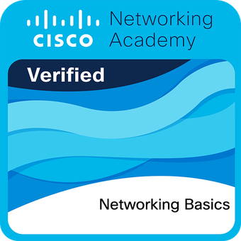
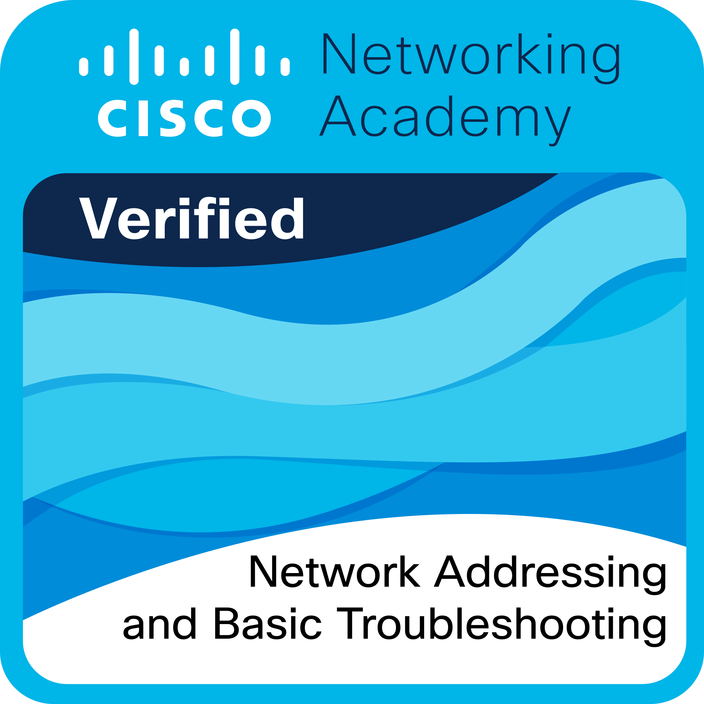
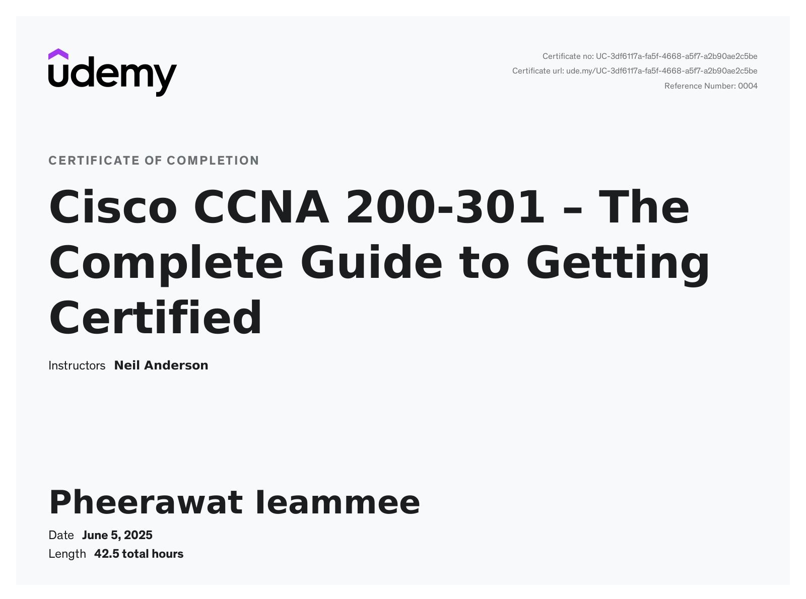

Pheerawat Ieamme
Summary
Recent graduate with bachelor’s degree of Telecommunication and
Network engineering, looking to secure a position as a entry-level
engineer in IT Infrastructure industry and use my problem solving
skills and my technical skills to grow my experience
Education
Bachelor Degree
XYZ Institute of ABC
(2021-2024)
Experience
Internship
Network Engineer Internship
- Reporting the preventive maintenance
- Supporting senoir in implementing network devices on-site
- Pre-configuration network devices
Work
Managed Serviced Network Engineer
- Support customer about network Infrastructure incident
- Support senoir enigneers about incident and service request
- Support senoir by making MoM to conclude meeting project
Skills
Hard Skills
- Microsoft Office Utilization (Word, Excel, OneNote, Teams, Powerpoint)
- MATLAB coding
- Simulink coding
- Python coding
- Socket Programming
- Network Addressing & Basic Troubleshooting
- Network Basic
Soft Skills
- Adaptability
- Time Management
- Communication
- Quick Learner
- Problem Solving
Certifications
- Cisco Networking Basics

- Cisco Networking Addressing & Basic Troubleshooting

- Cisco CCNA 200-301 – The Complete Guide to Getting Certified

Webpages Link